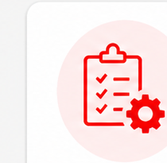
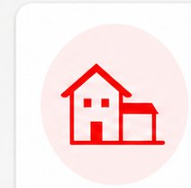
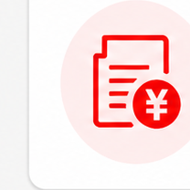
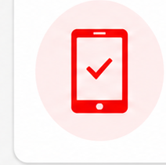

今回のご提案につきまして
切り替え背景 / 整理すべき論点 / ご提案の骨子
株式会社三幸 御中
Proposal
物件、入居者、契約、反響対応を
一つの流れで扱う業務基盤の整備
2026年04月26日
AGENDA
切り替え背景 / 整理すべき論点 / ご提案の骨子
情報確認 / 契約・請求 / 出稿・反響対応
展開イメージ / 進め方 / 補助金活用
Chapter1
システム切り替えの必要性に加えて、
現場定着、複雑な実務、スマホ利用、出稿対応まで
含めて整理する必要があります。
Proposal




Demo 01
物件、入居者、空室状況、修繕状況、対応履歴などを
まとめて管理できる画面イメージです
物件ごとの状態を一覧から把握
契約、顧客、対応履歴へ自然に接続
日常業務の確認起点となる一覧、詳細画面
Demo 02
契約、請求、インボイス対応に加え、
スマホからの確認や返信対応も行える画面イメージです
一般契約、定期借家、法人契約など複数パターンに対応
一時金請求書、家賃明細、各種インボイスに対応
内見中の確認、メール返信、社内向け情報参照
Demo 03
自社物件、他社物件の出稿と反響対応を起点に、
AI補助までつなげる画面イメージです
Future
基幹データを整えることで、
日常業務の効率化だけでなく、
将来的なAI活用や周辺業務への展開がしやすくなります
反響内容や物件情報をもとに
返信文作成や日程調整を補助
物件、顧客、対応履歴、
契約関連情報を横断して確認
オーナー様訪問前の確認や
提案準備を支える情報活用へ展開
契約や社内文書作成の
補助へ広げることができる
Roadmap
優先度を整理しながら、
段階的に具体化と実装を進めることで、
無理なく導入を進めます
まず、優先して整備する業務と機能を明確にする
画面イメージをもとに、現場運用に合わせて具体化する
契約、請求、出稿、スマホ対応などの要件を整理する
初回開発で扱う範囲と段階導入の切り分けを行う
優先度の高い領域から順に開発を進める
現場利用を見ながら改善を重ねる
Support
AIを含めた開発に進む場合は、
補助金活用の可能性や申請支援についても
あわせて確認いただけます